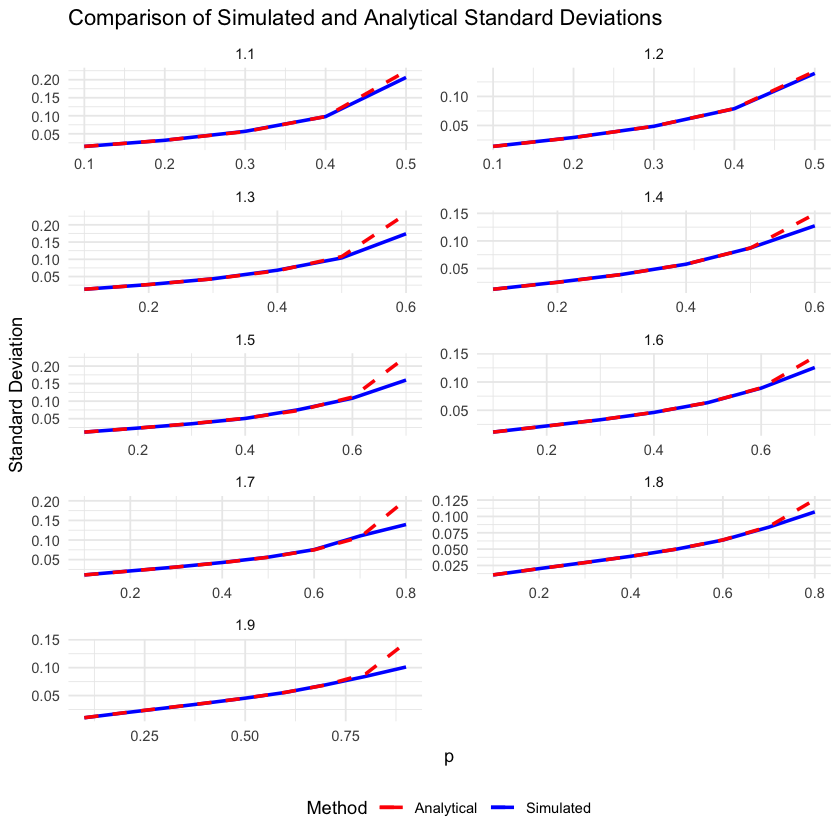
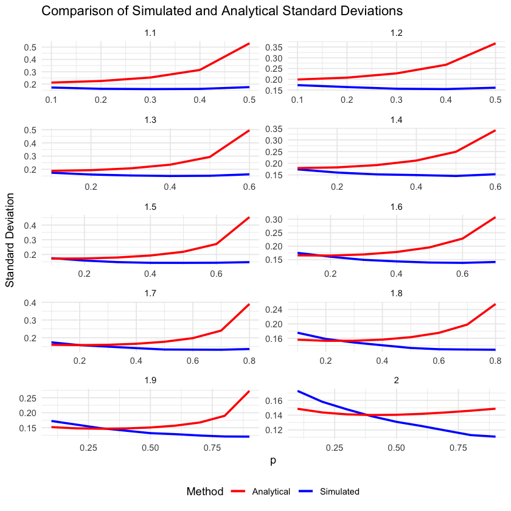
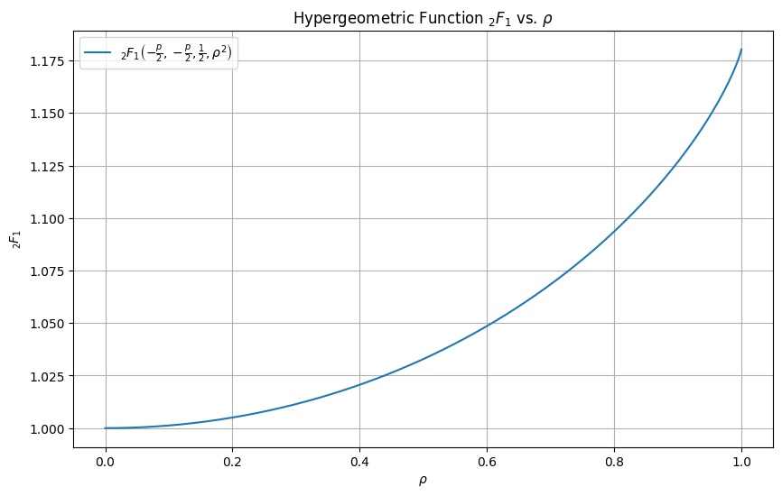
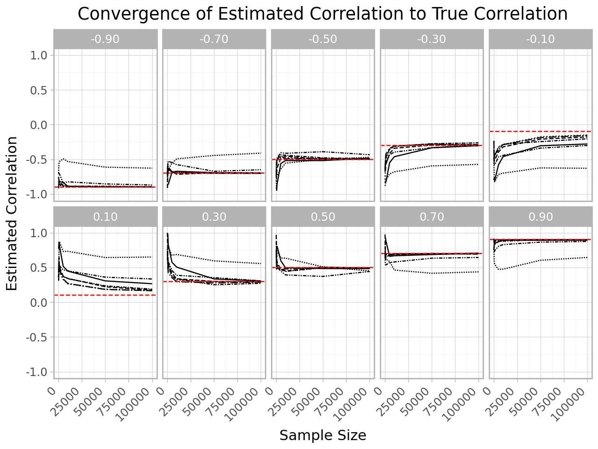
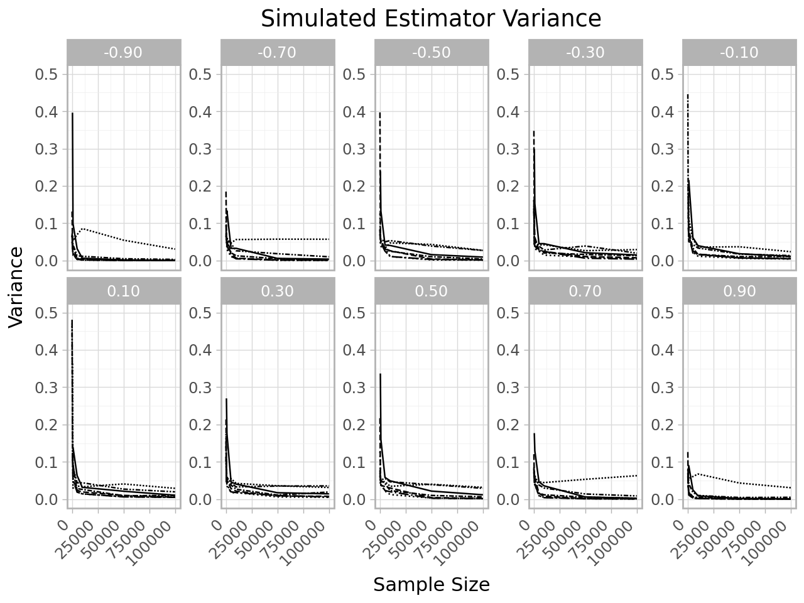
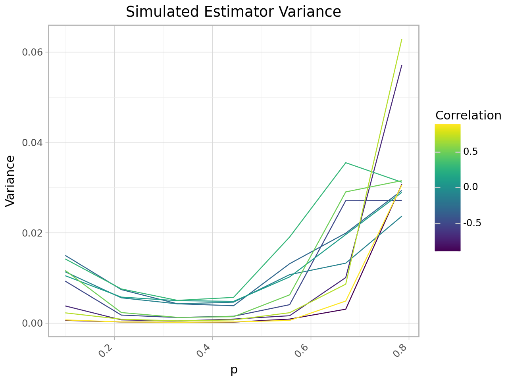

Current Progress
I’ve split the problem into two pieces: getting an “optimal” estimate of the covariance/correlation matrix underlying a stable-sub-Gaussian random vector, and adjusting for high-dimensionality. It’s a little hand-wavy, but I think this is reasonable since the RIE is a monotonically increasing function of the eigenvalues of the input. So, by the invariance of quantiles under monotone transformations, the median RIE estimate at each eigenvalue should be the same as the RIE of the median eigenvalue estimate.
Note: On this page, I’ve derived some preliminaries that are useful for calculating the theoretical joint moments of FLOM estimators.
Estimating \(\Sigma\)
We want to estimate the covariance matrix \(\Sigma\) of the underlying Gaussian vector that defines the dependence structure of our stable random variable \(X\).
Kodia and Garel propose a signed symmetric covariation coefficient:
\[ \text{scov} (X_1, X_2) = \kappa_{(X_1, X_2)}\bigg | \frac{[X_1, X_2]_\alpha [X_2, X_1]_\alpha}{||X_1||_\alpha ||X_2||_\alpha} \bigg|^{1/2} \]
Here, \([X_1, X_2]_\alpha\) and \(||X_1||_\alpha\) are the covariation of \(X_1\) on \(X_2\) and the covariation norm of \(X_1\), respectively, and \(\kappa\) represents the “agreement” of the signs of the covariation terms.
When \(1 < \alpha < 2\), this can equivalently be represented using Fractional Lower Order Moments (FLOMs):
\[ r = \frac{(\mathbb E |X_1|^p)^{2/p}+(\mathbb E |X_2|^p)^{2/p}-(\mathbb E |X_1- X_2|^p)^{2/p}}{2(\mathbb E |X_1|^p\mathbb E |X_2|^p)^{1/p}} \]
In both cases, when \(X\) is a sub-Gaussian random vector with underlying Gaussian vector \(G\), these quantities coincide with the correlation coefficient between \(G_1\) and \(G_2\).
Kodia and Garel show that straightforward estimators based on these quantities are strongly consistent estimators of the Gaussian correlation matrix.
Bias of the FLOM Estimator
Note that FLOMs aren’t unbiased estimators of scale/dependence unless \(p=2\).
Proposition 1 on p.32 of Nikias and Shao is:
\[ \mathbb E(|X|^p) = C(p,\alpha)\gamma^{p/\alpha} \]
where \(C(p,\alpha)\) is a known constant that depends only on p and the tail exponent of X and is used below, and \(\gamma\) is the scale parameter of X. Note that the authors use a non-typical parameterization for \(\gamma\) but this result holds in general for any distribution – rough/hand-wavy proof here.
One nice thing is that if we’re estimating a correlation-type quantity like scov and r above, these bias terms cancel out in the numerator and denominator, and we’re left only with the scale terms.
Variance of the FLOM Estimator
One area that (surprisingly) has received little attention in the literature is the variance of these FLOM estimators. While the variance of \(X\) may be infinite, we can estimate its scale and dependence using FLOMs with finite variance.
It’s known that for \(p<\alpha, \mathbb E |X|^p < \infty\). Therefore, the variance of \(|X|^p\) exists for \(p<\alpha/2\). Several papers estimate sample FLOM variance using Monte Carlo simulations, but I haven’t seen analytical representations in any papers. In this case, it’s a straightforward application of the expected value of the FLOM:
\[ \begin{aligned} \text{Var}(\frac{1}{N}\sum_{i=1}^N |X|^p) & = N^{-2} \text{Var}(\sum_{i=1}^N |X|^p) \\ &= N^{-1} [\mathbb E(|X|^{2p}) - \mathbb E(|X|^p)^2] \\ &= N^{-1} [C(2p,\alpha)\gamma^{2p/\alpha}-(C(p, \alpha)\gamma^{p/\alpha})^2]\\ &= \frac{2^{2p+2}\gamma^{2p/\alpha}}{N \alpha \sqrt \pi}\bigg\{ \frac{\Gamma(\frac{2p+1}{2})\Gamma(-2p/\alpha)}{\Gamma(-p)} - \frac{\Gamma(\frac{p+1}{2})^2 \Gamma(-p/\alpha)^2 }{\alpha \sqrt\pi\Gamma(-p/2)^2} \bigg\} \end{aligned} \]
What’s interesting is that simulation results are problematically misleading when \(X\) is nearly Gaussian:

The chart above simulates 10,000 samples to estimate the standard error of the FLOM estimator as a function of p at various values of \(\alpha\). When p gets near the infinite variance regime, simulations will materially underestimate the variability of the estimator, especially when \(\alpha \uparrow 2\). Heuristically, this is because tails are only a little heavier than the Gaussian case, and you’re much less likely to get extreme realizations that traverse the full support of the distribution via simulation unless your sample size is massive. In these examples, the simulation approach requires tens of millions of simulations to get close to the analyical standard deviation of the estimator.
I think this is an incredibly interesting aside that I haven’t seen covered in the literature so far.
This is relevant because some papers have suggested choosing optimal p to be \(p \lesssim \alpha/2\) (e.g. right on the boundary of finite variance).
The variance of the FLOM is monotonically increasing in p, and some have suggested making p as small as possible. The difficulty is that \(\lim_{p \rightarrow 0} C(p, \alpha) = \infty\). This problem doesn’t exist in the correlation estimator case.
Variance of the Correlation Estimators
Note: The correlation-type estimators are being abandoned since they perform far worse than original Median Oracle despite some nice theoretical properties.
When our estimator is a correlation-type estimator like scov and r above, any sample estimate is bounded on \([-1,1]\) and all moments of the estimator itself are finite for any p – even \(p>\alpha\)!
Like with raw FLOMs, Monte Carlo has been used to estimate variance of these estimators in some papers, but only with relatively small simulation sizes and without comment on potential errors in the calculation of an optimal p.
Since we can induce finite variance on the components of these estimators, it seems reasonable to invoke the delta method to approximate their asymptotic variance using Taylor series expansions to get a better estimate of a variance-minimizing choice of p.
My derivation of the correlation-type estimator variance approximation can be found here.
Unfortunately, this variance approximation doesn’t work very nicely in practice for moderate-sized simulations:

And worse, plugging it into the current Median Oracle algorithm in place of sample covariance results in worse estimates. I think this is happening because throwing away the magnitude information for a correlation-type estimator results in worse estimates. The good news is that an estimator based on the numerator of r should fix this problem. The bad news is that it reintroduces infinite estimator variance.
The Subordinated Covariance Estimators
Note: This estimator is also being put on ice due to infinite moments. I’m continuing to investigate more estimators of this type to see if I can get something that reverts to sample covariance as a special case when the data are Gaussian, but has better moment properties. Alternatives to estimator variance might also be helpful.
If we just take the rescaled numerator of r, we get the following:
\[ \begin{aligned} &(\mathbb E |X_1|^p)^{2/p}+(\mathbb E |X_2|^p)^{2/p}-(\mathbb E |X_1- X_2|^p)^{2/p} \\ &= (C(p,\alpha)\gamma_1^p)^{2/p}+(C(p,\alpha)\gamma_2^p)^{2/p}-(C(p,\alpha)\gamma_3^p)^{2/p} \\ & = C(p,\alpha)^{2/p}\bigg[\gamma_1^2 + \gamma_2^2 -\gamma_3^2 \bigg] \\ &=C(p,\alpha)^{2/p}\bigg[\frac{\sigma_1^2}{2} + \frac{\sigma_2^2}{2} -\frac{\sigma_3^2}{2} \bigg] \\ &=C(p,\alpha)^{2/p}\bigg[\frac{\sigma_1^2}{2} + \frac{\sigma_2^2}{2} -(\frac{\sigma_1^2}{2} + \frac{\sigma_2^2}{2}-\frac{2\rho_{12}\sigma_1\sigma_2}{2}) \bigg] \\ &= C(p,\alpha)^{2/p}\rho_{12}\sigma_1\sigma_2 \end{aligned} \]
The subordinated covariance estimator is defined as \(\hat s\) below:
\[ \begin{aligned} \hat s &= \frac{(\frac{1}{N}\sum_{i=1}^N |X_{1i}|^p)^{2/p} + (\frac{1}{N}\sum_{i=1}^N |X_{2i}|^p)^{2/p} -(\frac{1}{N}\sum_{i=1}^N |X_{1i} - X_{2i}|^p)^{2/p}}{C(p,\alpha)^{2/p}} \end{aligned} \]
One immediate benefit of this estimator is that, when \(p=2\), this estimator is exactly the sample covariance (which is an input into the Median Oracle estimator). This provides a very reasonable path to improving the performance of Median Oracle - when \(\alpha<2\), the sample covariance is a biased estimator of the subordinated covariance, and \(p=2\) may not be optimial anymore.
The problem, though, is that this formulation cannot have finite moments (this follows from Jensen’s inequality; we need \(p>2\) to be finite for finite moments, which is a contradiction.)
I’m continuing to explore potential estimators of this type.
Subordinated Correlation Estimator
My derivation of the FLOM covariance leads to (what I believe is) a novel estimator for the correlation coefficient of the subordinated Gaussian vector.
Using the fact that: \[ \begin{aligned} \mathbb E(|X_1 X_2|^p) &= \frac{2\Gamma(-2p/\alpha)}{\alpha\Gamma(-p)}\bigg(\frac{2^{p+1} \gamma_1^{p/} \gamma_2^{p}}{\pi}\bigg)\Gamma(\frac{p+1}{2})^2{}_2F_1(-\frac p 2, -\frac p 2, \frac 1 2, \rho^2) \end{aligned} \]
This requires that \(p < \alpha/2\). From there, we can get the following estimator for the underlying correlation between \(G_1\) and \(G_2\):
\[ \begin{aligned} \hat \rho = \text{sign}\bigg( \frac 1 N \sum_{i=1}^N \text{sign}(X_{1i} X_{2i}) \bigg) \bigg| {_2F_{1p}}^{-1}\bigg( \frac{\alpha \pi \Gamma(-p)\sum_{i=1}^N|X_{1i} X_{2i}|^p}{N2^{p+2}(\gamma_1 \gamma_2)^p\Gamma(\frac{p+1}{2})^2}\bigg)\bigg|^{1/2} \end{aligned} \]
Here, I use \({_2F_{1p}}^{-1}(\cdot)\) to denote the inverse of the hypergeometric function \({}_2F_1(-\frac p 2, -\frac p 2, \frac 1 2, \rho^2)\), such that \({_2F_{1p}}^{-1}({}_2F_1(-\frac p 2, -\frac p 2, \frac 1 2, \rho^2))=\rho^2\). While a bit nasty and not ideal for analyzing the behavior of this estimator, this can be implemented numerically without much trouble.
A quick examination of the hypergeometric function on the relevant domain shows that it’s really not cause for concern despite lacking a closed form:

It’s worth taking a second to justify taking the mean of the sign function, since \(\mathbb E X_1 X_2 \nless \infty\). Note that \(\text{sign}(XY) \in \{-1, 1\}\), so the random variable is bounded and all moments are finite. Equivalently, \(\mathbb E[\text{sign}(XY)] = P(XY > 0)- P(XY < 0) \in (-1,1)\), which always exists.
Because of our expectation definition above, this estimator will converge pointwise in probability to \(\rho\) by the law of large numbers. Better yet, it will have finite variance when \(p < \alpha/2\), which is required to get the subordinator to have finite expectation. This is a somewhat stronger claim for finite variance than the correlation estimator candidate offered above (which was made simply on the basis of it being bounded). So it might have better small-sample performance.
The benefits of this estimator are that it has finite variance and it should be extrmeley computationally cheap.
There are a few of problems with this estimator: First we can’t make any guarantees about convergence in expectation. Second, I don’t really expect it to perform incredibly well because of the need to estimate other parameters as inputs. Third, it doesn’t fix the issue of correlation-only estimates having worse performance in Median Oracle. The latter is fixed by recombining it with estimates of \(\alpha, \sigma_1, \sigma_2\), which can be made quickly and accurately without regard for the dimensionality of the problem (e.g. using MLE).
I tested this estimator via simulation on a range of different true correlation values, assuming other parameters \(\alpha, \gamma_1, \gamma_2\) are known. I ran this on a Databricks cluster running an i3.4xlarge node with 16 cores. This simulation took approximately 3 days to run.

The plot above shows the convergence of the estimated correlation to the true correlation (red horizontal line). Each linetype represents a different choice of p. A couple things are clear from the results of the simulation: the estimator does show good convergence to the true correlation value, but not for all values of p, not consistently across all true correlation values, and not likely better than MLE (MLE simulations were done separately, but haven’t been incoporated into these plots).

This estimator is interesting, and may be useful for some cases where other parameters are known, or if speed is more important than accuracy. Most importantly, it actually performs quite well in regimes of interest for real-world equity returns (between 0.2 and 0.8) However the fact that it must be constructed elementwise is a strike against it compared to other options, as is the fact that it still requires estimates of \(\alpha\) and each marginal distribution’s scale. Also, the wrong choice of p takes this from a possibly competitive estimator to a terrible one, which may be a problem in practice when true parameter values are unknown.

One important desirable property is that there does seem to be an optimal p in the sense of variance mimization across the range of \(\alpha\) values. This suggests that the problem of choosing p may not be as big as it seems. For p=0.4, for instance, variance is guaranteed to be finite for all relevant cases (since we assume \(\alpha>1\) already), and estimator performance should be reasonably good.
Still do to: - Incorporate MLE estimates for comparison - Test if there is a fixed best p when defined in terms of \(\alpha\).
Restricted Expectation-Maximization Approach
My original research proposal suggested estimating and then conditioning on the stable subordinator in the \(\alpha\)-SG(\(\Sigma\)) random variable. A natural approach to this is expectation-maximization, but I was resistant to this at first because if the MLE is accessible then it seems like we should obviously prefer it to EM, which only hopes to converge to the MLE. And since Median Oracle appears to do better than the MLE in the high-dimensional setting, there’s no point to this approach. But on deeper consideration, this may yield better estimates than EM in the high-dimensional setting.
If we estimate and then condition on the realized latent variable W (the maximally skewed stable random variable), we can get \(X|W=w \sim N(0,w\Sigma)\). Moreover since the estimation of each \(w_i\) happens in the cross-section, I’d expect the estimation error of these variables to decrease as the dimensionality increases, whereas the error of \(\Sigma_{EM}\) will of course increase - while estimating \(w_i^{(t)}\) relies on the estimate \(\Sigma^{(t-1)}\), it may be less impacted by a “bad” estimate, especially if we ultimately only care about correlations (consider the single-observation case). Taking the \(X|W\) and plugging this into the closed form MLE for \(\Sigma\) given Gaussian data should give us a better estimate. Better still, adjusting this MLE for high dimensionality using the RIE should yield an even better estimate.
Likewise, this should be provable using asymptotic efficiency of MLE.
EM for stable random vectors isn’t straightforward, and an approach was only first offered in 2018 by Teimouri et. al. . This approach requires a conditional maximization (CM) step, then a conditional maximization of the likelihood (CML) step, which itself involves a separate stochastic EM to approximate the parameters of a related Weibull distribution. This is required because the authors are trying to jointly estimate all parameters via EM. Since we’re only interested in \(\Sigma\), we can actually simplify \(\alpha\)-SG(\(\Sigma\)) EM significantly, both computationally and conceptually, by restricting our parameter search to not include \(\alpha\), totally eliminating the CML step, and making the process equivalent to a simple Gaussian EM with a conditional maximization step for W.
Normalized Sample Covariance Matrix Approach (NSCM)
The idea was to estimate the correlation matrix with NSCM (by inverting its expected eigenvalues), and then rescaling via EM. Need to add more details on the procedure, since it’s pretty cool.
Empricical Copula Transform
Since univariate stable MLE works well (fast and very accurate), one idea I had is to recreate the full dispersion matrix via lower-dimensional sub-matrices. These can be used to estimate W (as in EM above). Taking this idea to the limit (e.g. the marginals) yields this new idea…
In testing, this new approach works incredibly well, besting direct MLE calculations both in terms of error and time (by a lot).
Results and detailed procedures here here: Linked Copula Transform Estimator.
[Last Updated on November 30, 2024]